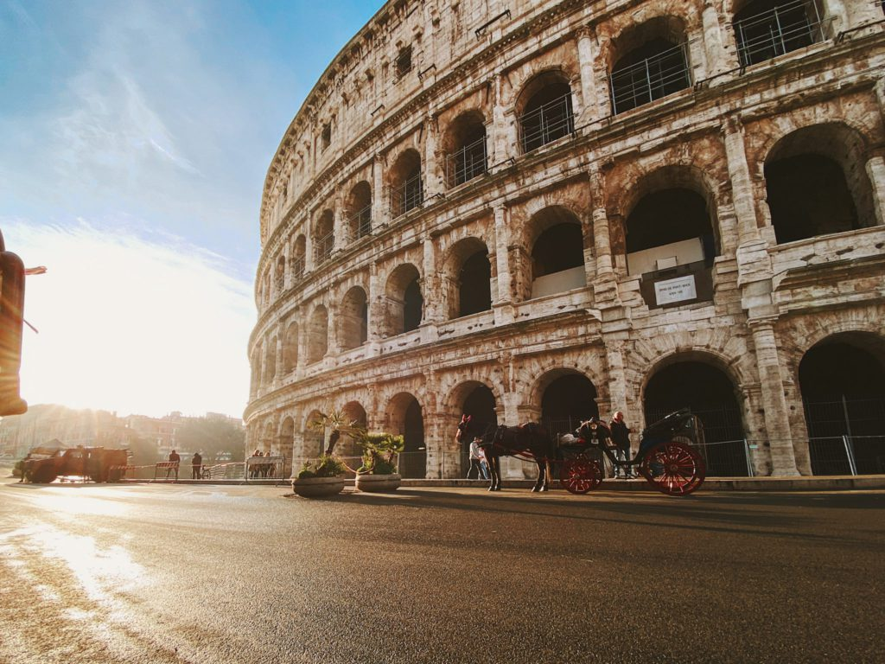

Elle est lasSeule des 7 merveilles du monde moderne à se trouver en Europe. Le Colisée de Rome fait la fierté des Italien·ne·s et suscite l’intérêt de millions de visiteur·se·s chaque année. Ce titanesque amphithéâtre est le plus imposant jamais construit dans l’Empire romain. Long de près de 188 mètres, large de 155 et haut de 50, il permettait à l’époque d’accueillir 50 000 spectateur·trice·s. Cette merveille architecturale date de 70 de notre ère. Elle servait pour les combats d’animaux sauvages et de gladiateurs mais également pour d’autres événements comme les exécutions de condamné·e·s à mort. Le Colisée occupe aujourd’hui une place importante dans la culture populaire. Le film Gladiator contribua notamment à l’augmentation massive de son nombre de visiteur·se·s.